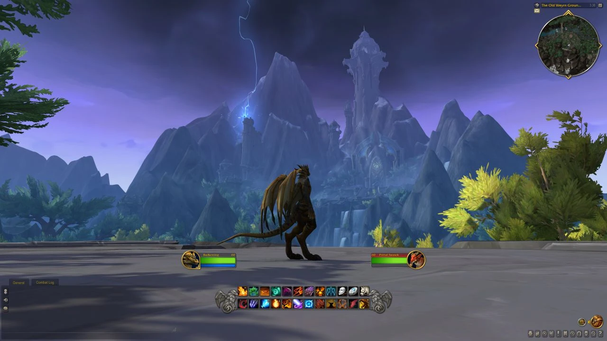

파티 · 동료 AI
탱커·힐러·딜러 등 역할을 나누고 파티 상태에 맞춰 동료의 행동 우선순위를 구성합니다.
캐릭터 역할, 동료 행동, 이동과 전투 규칙을 관리하는 화면 예시입니다.

[프로필]파티 지원 / 역할 기반 행동 구성
[전사]방어 우선 → 대상 유지 → 근접 거리 확보
[사제]아군 체력 확인 → 치유 우선순위 비교
[마법사]시야 확인 → 거리 유지 → 대상 공격
[이동]파티 리더 위치를 기준으로 동료 경로 설정
[예외]사망 · 대상 손실 · 경로 이탈 시 복구 규칙 적용
탱커·힐러·딜러 등 역할을 나누고 파티 상태에 맞춰 동료의 행동 우선순위를 구성합니다.
이동, 전투, 자원 관리 등 원하는 플레이 흐름에 맞게 상태와 행동 규칙을 설계합니다.
캐릭터 프로필과 작업 상태를 관리하고, 행동 기록을 확인하는 제어 화면을 함께 제작합니다.
| 프로필 | 기본 역할 | 주요 판단 기준 | 상태 |
|---|---|---|---|
| 파티 방어 | 전사 | 위협도 · 방어 스킬 · 아군 위치 | 구성 예시 |
| 파티 회복 | 사제 | 체력 · 자원 · 회복 우선순위 | 구성 예시 |
| 원거리 지원 | 마법사 | 공격 거리 · 시야 · 대상 상태 | 구성 예시 |